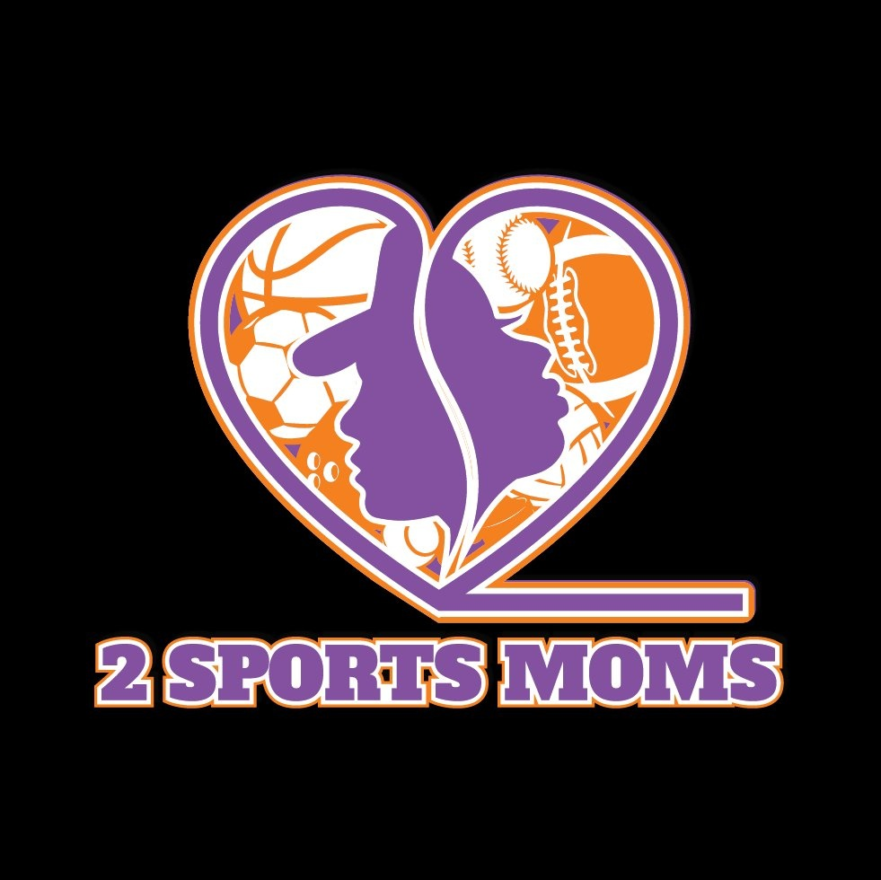

Brand & Website


Logo identity and full website build by Moor Graphix
2 Sports Moms was founded by two mothers who had lived the student-athlete pipeline and seen the gap firsthand. They had the mission, the lived knowledge, and the drive. What they didn't have was a brand identity, a website, or a platform that could carry them into the community. Moor Graphix built all three — from zero.

Logo identity and full website build by Moor Graphix
Two mothers built 2 Sports Moms from lived experience — they had navigated the student-athlete pipeline themselves and understood the gap better than anyone. Student-athletes and their families were making high-stakes decisions without access to the "real-world playbook."
But a mission without a brand can't be seen. Without a logo, you can't put your mark on anything. Without a website, you have nowhere to send the families who need you, the donors who want to give, or the community partners who want to connect.
Moor Graphix applied the Cultural Alchemy framework — starting with the truth of who 2 Sports Moms actually is. Not a generic nonprofit. Not a youth sports program. Two women. Two sports. A lived-in, specific, earned perspective on what student-athletes and their families actually need.
That truth drove the logo design: bold enough to build on, specific enough to be unmistakable, flexible enough to work everywhere. The site architecture was built to serve three different audiences simultaneously — student-athletes, parents, and institutional partners — without confusing any of them.
A brand that tries to serve everyone says nothing. This brand says exactly who it's for — and to that audience, it says everything.
Extracted the core truth — two sports moms, two sports, one underserved community — and encoded it into a visual language built to carry a movement.
Designed the primary logo and supporting campaign marks — built to scale across digital, print, apparel, event signage, and grant documentation from day one.
Built the full site — About, Mission, Impact, Programs, Network, Donate, Blog — structured so student-athletes, parents, and institutional partners each find their path without friction.
Delivered the complete brand system — logo files, color system, typography, and a site the organization could update, grow, and use to support fundraising and partnerships from day one.
2 Sports Moms published their 2025 Year in Review — documenting real programs, real events, real families served. That level of accountability and visibility starts with a platform that works. The logo and website Moor Graphix built gave the organization the infrastructure to operate, fundraise, and grow from the first day of their first full year.
2 Sports Moms launched into 2025 — their first full year — with a professional identity, a working website, and the infrastructure to tell their story publicly. Football camps, basketball jamborees, NIL education sessions, ACE Bags distributions, and parent consultations — all documented on the platform Moor Graphix built. That's not just a website. That's a movement with a home.
The brand identity gave the organization the professional signals required to pursue grants, corporate partnerships, and institutional relationships.
The site serves student-athletes, parents, partners, and donors simultaneously — About, Impact, Network, Programs, Donate, and a MOM's Den blog — each audience finding their own path without confusion. Three distinct populations, one coherent platform.
The logo works across digital, print, apparel, event materials, and official documentation. It was designed to grow with the organization — not be the thing they eventually outgrow. As 2 Sports Moms expands nationally, the brand holds.
The site architecture reflects the organization's philosophy — athlete readiness, academic support, mental wellness, and parent guidance are all visible, structured, and findable. The platform doesn't just list programs. It communicates a framework.
Low-income families. First-generation student-athletes. Parents who never had a playbook. The site speaks directly to them — in plain language, with clear pathways — because the founders know exactly who they're serving.
"Your heritage is your competitive moat — we forge it into visual systems that compound forever."
— Sid Washington, Moor Graphix
For 2 Sports Moms, Cultural Alchemy meant recognizing that the founders' lived experience was the brand. Not a tagline. Not a color palette. The actual brand — two women who had navigated the pipeline and come out the other side with hard-won knowledge.
The logo and site we built encoded that truth into a visual system that could carry a movement into the community, into grant offices, and into the lives of the families they were built to serve.
The logo and website for 2 Sports Moms, a 501(c)(3) nonprofit, giving the organization a brand identity and platform for its first year of operation.
A registered 501(c)(3) nonprofit.
Establish credibility and a clear, mission-driven identity to carry the nonprofit into its first year of fundraising and community outreach.
A mission without a brand stays inside the founders' networks. A mission with the right brand becomes a movement. Moor Graphix builds the logo, the platform, and the AI infrastructure to make it compound.